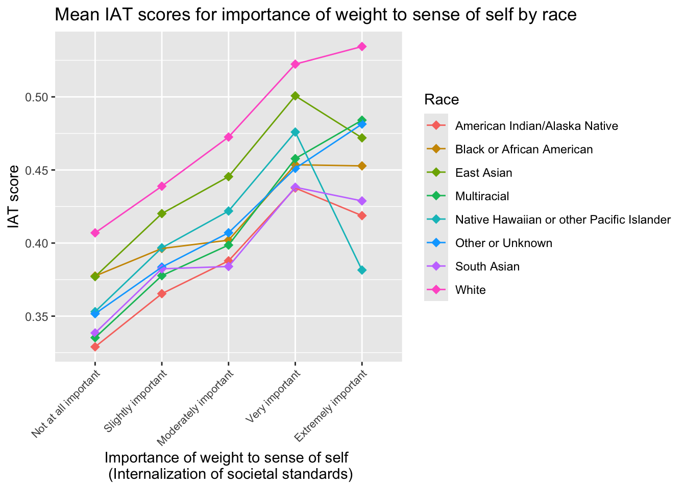
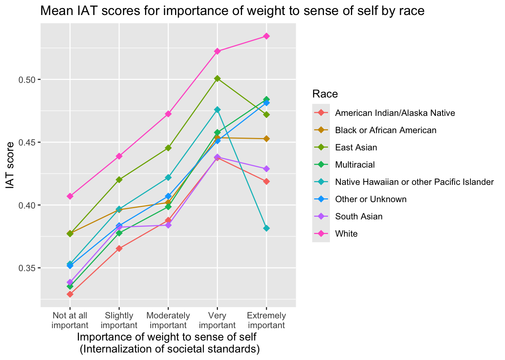

iat_prep_new = iat_prep_old %>%
mutate(ind_tf_tw = grepl(4, genderIdentity),
ind_gq_gnc = grepl(5, genderIdentity))Lab 3 Instructions
BSTA 512/612
Due: February 28, 2025 at 11pm
IMPORTANT TO READ
Please do not delete the rubric from your
.qmdfile. I will use it to circle the grades!There is an intructions file and a file for you to edit and turn in. Please only work in the latter file!!
1 Directions
Please turn in your .html file on Sakai. Please let me know if you greatly prefer to submit a physical copy.
You can download the .qmd file for this lab here.
Caution
This is the instructions file. The link above will take you to the editing file where you can add your work and turn it in!! Please do not remove anything from the editing file!!
1.1 Purpose
The main purpose of this lab is to perform some quality control on our data, recode some of the multi-selection categorical variables, continue data exploration, and start analyzing the main relationship of our research question.
1.2 Grading
This lab is graded out of 12 points. Nicky will use the following rubric to assign grades.
1.2.1 Rubric
| 4 points | 3 points | 2 points | 1 point | 0 points | |
|---|---|---|---|---|---|
| Formatting | Lab submitted on Sakai with .html file. Answers are written in complete sentences with no major grammatical nor spelling errors. With little editing, the answer can be incorporated into the project report. |
Lab submitted on Sakai with .html file. Answers are written in complete sentences with grammatical or spelling errors. With editing, the answer can be incorporated into the project report. |
Lab submitted on Sakai with .html file. Answers are written in complete sentences with major grammatical or spelling errors. With major editing, the answer can be incorporated into the project report. |
Lab submitted on Sakai with .html file. Answers are bulletted or do not use complete sentences. |
Lab not submitted on Sakai with .html file. |
| Code/Work | All tasks are directly followed or answered. This includes all the needed code, in code chunks, with the requested output. | All tasks are directly followed or answered. This includes all the needed code, in code chunks, with the requested output. In a few tasks, the code syntax or output is not quite right. | Most tasks are directly followed or answered. This includes all the needed code, in code chunks, with the requested output. | Some tasks are directly followed or answered.This includes all the needed code, in code chunks, with the requested output. In a few tasks, the code syntax or output is not quite right. | More than a quarter of the tasks are not completed properly. |
| Reasoning* | Answers demonstrate understanding of research context and investigation of the data. Answers are thoughtful and can be easily integrated into the final report. | Answers demonstrate understanding of research context and investigation of the data. Answers are thoughtful, but lack the clarity needed to easily integrate into the final report. | Answers demonstrate some understanding of research context and investigation of the data. Answers are fairly thoughtful, but lack connection to the research. | Answers demonstrate some understanding of research context and investigation of the data. Answers seem rushed and with minimal thought. | Answers lack understanding of research context and investigation of the data. Answers seem rushed and without thought. |
*Applies to questions with reasoning (like Section 2.4 and explanations in Section 2.5)
2 Lab activities
Before starting this lab, you should go back to Lab 2, save a new .rda file that contains all the new variables from that Lab. Then you can load it here!
2.1 Restate your research question
Task
Please restate your research question below using the provided format. It’s repetitive, but it helps me contextualize my feedback as I look through your lab.
How is implicit anti-fat bias, as measured by the IAT score, associated with “insert main independent variable here”?
2.2 Quality Control
There are a few more issues with the data that we need to look into. First, there is another coding for NA values in the race variable: -999. We will need to filter out these observations.
We will also need to look at individuals who have potentially answered the survey questions untruthfully. We cannot catch everything, but a good place to start is by looking at individuals who have done more than one of the following:
selected the earliest or latest possible birth year
selected the lowest or highest possible education
selected all gender identities (for those using gender identity)
selected all races (for those using multiple selection race)
selected the lowest or highest weight (for those looking at BMI)
selected the lowest or highest height (for those looking at BMI)
I want to take a second to mention that any of the above selections, and combinations of the above selections, are valid. However, we should start to flag the possibility that someone has not gone through the survey properly if we notice that most or all of the respondent’s answers are the first answer choice, last answer choice, or selected all options. Additionally, not all of these carry the same importance in discerning validity. For example, a recorded age of 111 years old is the most striking to me. When paired with other selections that are the maximum or minimum (or first or last) option, then I will record it for future investigation. If this observation looks to be an outlier or high leverage point in our analysis, that is when I’ll decide to remove it.
Tasks
- Filter out observations with a value of -999 in the race variable.
- Glimpse at the observations that may indicate a respondent who has not properly completed the survey portion. This will require filtering for specific answer choices. Please see examples of
filter()on it’s documentation page.
2.3 Working with multi-selection variables
In the list of variables that we may choose to work with (in Lab 2), there are two that allowed respondents to select multiple categories. The two variables are genderIdentitiy and raceombmulti. If you did not choose these variables to work with, you may skip this section.
If you chose one or both of these variables, then we need to make new variables that correspond to indicators for each possible selection in the respective variable.
Let’s start with the grepl function. For this function, we can input one of our column names and a value, then it will output, for each row, if the value is in the column. For example, in genderIdentity an individual may identify as a “Trans female/Trans woman” and “Gender queer/Gender nonconforming.” In our dataset in R, this would show as [4,5] in genderIdentity. If we want to create two separate indicators for anyone who identifies as “Trans female/Trans woman” then I need to look for the value 4 in the column genderIdentity. I will run a separate indicator to find individuals who identify as “Gender queer/Gender nonconforming.” Here is an example code of how I would use grepl to do this:
You will need to extend this to all other gender identities.
For race, raceombmulti is also the follow up question to raceomb_002. So our indicators need to reflect both variables. In this case, we need to use grepl on both columns at once. For example, if I want to create an indicator for individuals who identify as American Indian/Alaskan Native then I need to find individuals who identify as American Indian/Alaskan Native only and individuals who identify as American Indian/Alaskan Native in addition to another race. For example, my code might look like:
iat_prep_new = iat_prep_old %>%
mutate(ind_AIAN = grepl(1, raceomb_002) | grepl(1, raceombmulti))I suggest only searching for 1-7 in both raceomb_002 and raceombmulti. Note that if raceomb_002 = 8 , then individuals identified as “multiracial” and will select values in raceombmulti.
Task
If you are using genderIdentity or raceombmulti, create indicator variables for each possible selection.
2.4 Thinking about potential confounders and effect modifiers
Before we explore more of the data, I want us to take a second to think through potential confounders and effect modifiers from the covariates that we selected in Lab 2. For some of the covariates, we were asked to explain why we chose them. Now I want you to consider how each could alter the relationship between IAT score and your variable of interest (from your research question). For each covariate, explain how it might or might not change the relationship. For example, if our variable of interest is fat group identity, then we may consider that self-perception of size is a confounder since it could be linked with fat group identity and potentially be associated with IAT score.
For multi-level, unordered categorical covariates, you might consider if a specific category has an impact. For example, we might consider creating an indicator for white, non-Hispanic/Lantinx respondents since the history of fatphobia is tied with white-centered colonization and white supremacy (Redpath, 2023). Thus IAT scores might look different for White respondents vs. minority respondents (those who answered American Indian/Alaskan Natives; East Asian; South Asian; Native Hawaiian or other Pacific Islander; Black or African American; or Hispanic or Latino). Alternatively, we may not want to center our analysis on whiteness. The same fatphobic history involving white supremacy was particularly targetting Black people. So perhaps we want make an indicator for Black or African American respondents. Another option is leaving race as is - we may have enough data to handle the inclusion of all groups!
The purpose of this section is to make sure we are thinking about the relationships between variables in our analysis. I do not want us to make any decisions based solely on the data. I want any changes or manipulations in our variables to be motivated by research-backed evidence.
Finally, for this project, we are most interested in the relationship we identified in our research question! Other variables are supporting this question, and improving that model fit so that we get as close to the true relationship in our research question as possible!
Task
For each variable, consider how each could alter the relationship between IAT score and your variable of interest (from your research question). For each covariate, explain how it might or might not change the relationship.
2.5 Continuing data exploration
In this section, we are going to further explore the variables that we might be adjusting for in our model (potential covariates outside the variable or interest in our research question).
2.5.1 Bivariate exploration
We want to look at all other relationships between IAT score and each covariate (outside of the research question variable). Some of you have already made these plots in Lab 2, so you can simply refine them and display them here. There are a few questions that I want you to consider:
For categorical variables, is there an inherent order? Does the ordered values follow an approximately linear relationship? Are the categories “evenly spaced”? For example, education categories are not necessarily evenly spaced.
Again for categorical variables, is there a natural place to divide the categories up? For example, in education, it might be helpful to control for the fact that students in college might be asked to complete this test as an assignment. Thus, we might make an indicator for individuals in college vs. not. This decision can be informed by our plot, but it should not be driven by our plot!!
Task
For each variable outside of your research question, create the appropriate plot to visualize the relationship between IAT score and the variable. Comment if there is an obvious trend or not.
2.5.2 Multivariate exploration
Now we want to extend our plots for Lab 2 where we looked at the outcome (IAT score) and our main variable of interest (as identified by our research question). Here, we will run the same plot, but include another variable. This will help us visualize potential confounders or effect modifiers. Note that if you made indicator variables (for race, gender identity or any other variable), then you should have a plot for each indicator variable.
You will need to really think about what kind of plot will best displays these relationships! IAT score is continuous, and many of your variable of interest is categorical. You may consider side-by-side boxplots where the color is the additional variable. You might also consider a jitter plot or only plotting the means. Remember you’re goal for plotting is to get a sense of the relationship only from the plot! Your audience should not have to work hard to understand what the plot is communicating. For example, I wanted to look at IAT score, internalization of societal standards, and race. I might make my plot like such:
Code to contruct multivariate plot
ggplot(iat_prep2, aes(x = important_001, y=IAT_score, color = as.factor(raceomb_002_f))) +
# geom_jitter(size = 2, alpha = .6, width = 0.2) +
stat_summary(fun = mean, geom = "point", size = 3, shape = 18) +
stat_summary(fun = mean, geom="line") +
scale_x_discrete(limits = levels(iat_prep2$important_001_f)) +
labs(x = "Importance of weight to sense of self \n (Internalization of societal standards)",
y = "IAT score",
title = "Mean IAT scores for importance of weight to sense of self by race",
color = "Race") +
theme(axis.text.x = element_text(angle = 45, size = 8, hjust = 1))
Code to contruct multivariate plot
ggplot(iat_prep2, aes(x = important_001, y=IAT_score, color = as.factor(raceomb_002_f))) +
# geom_jitter(size = 2, alpha = .6, width = 0.2) +
stat_summary(fun = mean, geom = "point", size = 3, shape = 18) +
stat_summary(fun = mean, geom="line") +
scale_x_discrete(limits = levels(iat_prep2$important_001_f), labels = function(x) str_wrap(x, width=10)) +
labs(x = "Importance of weight to sense of self \n (Internalization of societal standards)",
y = "IAT score",
title = "Mean IAT scores for importance of weight to sense of self by race",
color = "Race")
Note that the above plot is specific for these variables!! Other variables may require a different type of visua
lization!! Also note that I originally had geom_jitter() in my plot, which would make the plot really hard to understand!! Try uncommenting it to see what I mean by “hard to understand.” Also, think about why I connected the mean IAT scores across the different levels of internalization. I had a hard time connecting specific race’s points to identify a trend. Again, try commenting out stat_summary(fun = mean, geom="line") to see what I mean.
Note
An aside: You may see that collapsing groups might wash out differences. If we make an indicator for Black of African American respondents, as we mentioned above, then including White respondents with other minority groups may wash out their association with IAT score and wrongly lead us to a model that says identifying as Black or African American has no association with IAT, where we clearly see that Black or African American respondents have a unique trajectory for IAT scores.
Please make sure that you have made the needed changes to your plot in Lab 2. I noticed many unordered groups in plots where there should be an inherent order and unreadable axes because the text was not tilted. Please see discussion on Slack for what some students did to achieve these plots.
Here are a few sources that might help you get started with the visualizations:
Task
For at least 3 variables outside of your research question, create the appropriate plot to visualize the relationship between IAT score, your main variable (in research question), and the variable outside your research question. Comment whether you can determine anything from the plot or not. If you can, is there any indication that the variable is a confounder or effect modifier?
2.6 Fit a simple linear regression
As a starting point, it is good to fit a simple linear regression for our primary research question. This is often called the “crude” association. It just means that we are not adjusting for any other variables, and establishing the “starting point” for our analysis. It is likely that the results of the regression will change as we add other variables in the model.
Task
Run a simple linear regression model for the relationship in your primary research question. Print the regression table. Interpret the results and comment on the initial trend you see.
Bonus Task
This is not required in Lab 3. However, if you want to run a multiple linear regression model with one other variable that you plotted in Multivariate Exploration, then you should try it! Do the results align with your ideas in Section 2.4 and/or the visualization you saw in Section 2.5?
3 Bibliography
Redpath, F. (2023). Abolish the Body Mass Index: A Historical and Current Analysis of the Traumatizing Nature of the BMI. Tapestries: Interwoven Voices of Local and Global Identities, 12(1). https://digitalcommons.macalester.edu/tapestries/vol12/iss1/12
Linear Models - Lab 3 Instructions Linear Models - Lab 3 Instructions Linear Models - Lab 3 Instructions Linear Models Due: February 28, 2025 at 11pm Due: February 28, 2025 at 11pm